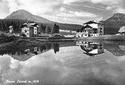
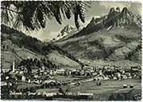
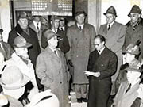

Il Concilio di Trento o Concilio Tridentino fu il XIX concilio ecumenico della Chiesa cattolica, aperto da papa Paolo III nel 1545 e chiuso, dopo numerose interruzioni, nel 1563. Con questo concilio venne definita la riforma della Chiesa cattolica (Controriforma) e la reazione alle dottrine del calvinismo e luteranesimo (Riforma protestante), con il fine di rafforzare l'autorità papale, seriamente minacciata dalla diffusione del luteranesimo. Fu un concilio importante per la storia della Chiesa cattolica, tanto che l'aggettivo "tridentino" viene usato ancora oggi per definire alcuni aspetti caratteristici della Chiesa cattolica ereditati da questo concilio e mantenuti per i successivi tre secoli, fino ai concili Vaticano I e Vaticano II.



Breve video sul concilio di Trento